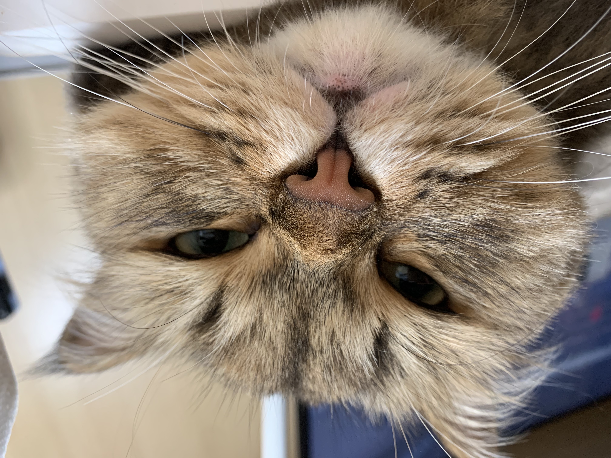

뽀찌는 혜성처럼 나타났습니다. 이 털이 길고 보드라우며 말랑한 고양이는 이전까지의 행적이 밝혀지지 않은 신비주의 고양이입니다. 평택시의 어느 동물병원에서 치료받은 이후, WBCC가 주목한 아기 고양이로 등극. 뽀찌의 역사가 시작됩니다. 이제 뽀찌는 올해 가장 털이 부드러운 고양이 1위로 정상에 섰습니다.
너무도 동그랗습니다! 연예인을 닮았다는 외모 찬사까지 받으며 칭찬와 호평 위에 군림합니다! 뽀찌의 매력 포인트를 셀 수 없습니다. 너무 많기 때문이죠.